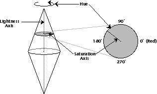

Color Chooser
The color chooser provides a common interface to the end user for choosing a color. A color chooser can be created and used by any Galaxy application and is the recommended method for requesting a color from the user. The user has the choice of interactively specifying a color using several different color models. The supported color models are RGB (red, green, blue), CMY (cyan, magenta, yellow), HLS (hue, lightness, saturation), and Grayscale. For details on the implementation of these color models, refer to the Color chapter.
Native Color Choosers
Some platforms provide native versions of a color chooser; whenever possible, Galaxy tries to use this native dialog. To prevent Galaxy from using the native chooser, call SetPreferNative with FALSE before opening the color chooser. If your application intends to support native color choosers, use vcolorchsrPlace, not vwindowPlace, to position the native color chooser's window on the screen. This ensures that the native chooser reflects as many of the vcolorchsr settings as possible.
Because it is impossible for Galaxy to determine what kind of changes a subclass makes to the standard definition of a chooser, subclasses are never automatically mapped to native dialogs. Be aware that many of the Galaxy color chooser features are not available on native color choosers.
Color Chooser Components
Figure 2 shows a color chooser displaying the HLS color model. The components of the color chooser are described on the following pages.
Figure 2. A color chooser displaying the HLS color model
By default, the slider bars dynamically reflect the appearance of the color being specified. As you drag the indicator to the desired value for any color component, the appearance of the other components dynamically changes to reflect your selection. However, if you want the slider bars to represent an unchanging scale of values for each component, unselect Reform Slider Images from the Options Menu. Now the appearance of the slider bars does not change as a selection is made.
Named Colors displays a scrolling list of predefined colors. Colors for an application can be selected directly from this list.
Color Tolerances displays a pop-up menu and two sets of slider bars. Use the pop-up menu to specify a matrix for dithering. Use the slider bars to define the delta values for dithered colors. The top set of sliders defines the delta values for each component of a color; the bottom slider defines a delta value, or distance, applied equally to all components.
Color tolerances for a color can also be specified from Default Color Tolerances command in the Options Menu. This command displays a menu of defined color tolerances. These menu selections are outlined in Table 2.
Color Method Pop-up Menu
Use the Color Method Pop-up Menu to select a color model for the color chooser. The View Area and available menu selections change to reflect the selected color model. Color Box
The Color Box displays the current and previous color selections. The bottom half displays the current selection; the top half displays the previous selection. The user can revert to the previous selection by clicking the top half of the Color Box. Slider Bars
Three slider bars are used in conjunction with percentage fields to specify individual components of a color. The color components represented by the slider bars vary with each color model. The indicator on each slider bar defines the value for that component. The indicator can be dragged to specify new values for the component, or the value can be entered into the percentage field. You can also click in the slider bar to specify a new value. View Area
The color chooser has three views available for selecting and defining colors. Use the Views Menu to specify a view. The three views are:
The Color Wheel/Plane displays a graphic representation, or map, of the selected color model. This map varies with each color model. Colors can be specified directly from the map for the HLS, RGB, and CMY color models. (In the Grayscale model, selections are made using the slider bar.)
| Color Tolerance | Dither Area (pixels) | Delta Value (percent) |
|---|---|---|
| Large Dither | 8 x 8 | .39 |
| Small Dither | 2 x 2 | 6.25 |
| Solid | No Dithering | 25.00 |
| Precise Large Dither | 16 x 16 | .19 |
| Precise Small Dither | 4 x 4 | 1.56 |
| Precise Solid | No Dithering | 6.25 |
The HLS Color Wheel
When working with the HLS color model, the HLS Color Wheel is displayed in the View Area. Figure 2 shows a color chooser displaying the HLS Color Wheel. This wheel represents a mapping of the hue and saturation components of a color for a given lightness value. It is the view looking directly down the double cone (shown in Figure 3) at the plane specified by the value of the lightness component. (The lightness component is specified in the color chooser with the Lightness Slider Bar.) Hue is measured in increasing values as you move counterclockwise around the Color Wheel. Zero, or red, is located on the right side of the Color Wheel. Saturation is measured from the center of the Color Wheel to the perimeter. Zero saturation is located at the center.
Figure 3. The HLS Color Wheel

To specify a color using the Color Wheel, define the value for the lightness component by dragging the indicator on the Light slider bar. Then, click anywhere in the Color Wheel and drag the pointer to a new value. A crosshair cursor tracks your selection as you drag the pointer. The slider bars representing the Hue and Saturation color components move to reflect your selection.
Figure 4. The RGB Color Plane
The Color Plane represents a mapping of two primary color components of a color for a given value of the third primary color component. It is a view looking directly down the top of a cube representing a color model. Figure 5 shows one possible cube for the RGB color model. Use the Options Menu to select the color component represented by the Color Plane.
Figure 5. The RGB Color Model
To specify a color using the Color Plane, click anywhere in the Color Plane and drag the pointer to a new value. A crosshair cursor tracks your selection as you drag the pointer. The slider bars representing the two mapped colors move to reflect your selection.
To save a color, press the Control key and select a cell in the palette. You can also save a color using the Add Saved Color command from the Options Menu. The color is saved at the position of the indicator in the Saved Color Palette. Use the Arrow keys to change the location of the indicator.
In Galaxy applications, colors are saved with the color model used to represent it. When a color chooser is set to edit a saved color, the chooser changes to the color model saved with the color. Use SetColor or SetColorSpec to edit a saved (or named) color. Call SetMethod after calling SetColor or SetColorSpec to set a specific color model for a saved color. This will override the color model saved with the color.
The RGBCMY Color Plane
When working with either the RGB or CMY color models, the Color Plane is displayed in the View Area. Figure 4 shows a color chooser displaying the RGB Color Plane. Saved Color Palette
Up to 16 colors can be saved on the Saved Color Palette. When a color is saved, the color tolerance values for dithering are saved with it. Saved colors are available for future editing sessions. Key Functionality
Use Create to create a color chooser. Set the notification function for a color chooser with SetApply. You may want to customize various aspects of the chooser before opening it with Open. Use SetMethod to select a color model for the chooser. When a chooser's color model is set, its display and menus change to reflect the new color model. Use SetPanel to specify a view for the chooser. The available views include the Color Wheel (or Color Plane), the scrolling list of pre-defined Named Colors, or the Color Tolerances view. If you want to hide color tolerances information from the user call SetTolerancePanel with a value of zero. This removes the Default Color Tolerances command from the Options Menu and the Color Tolerances view from the chooser.
Table of Contents
Help Map
Need help? Contact Visix.